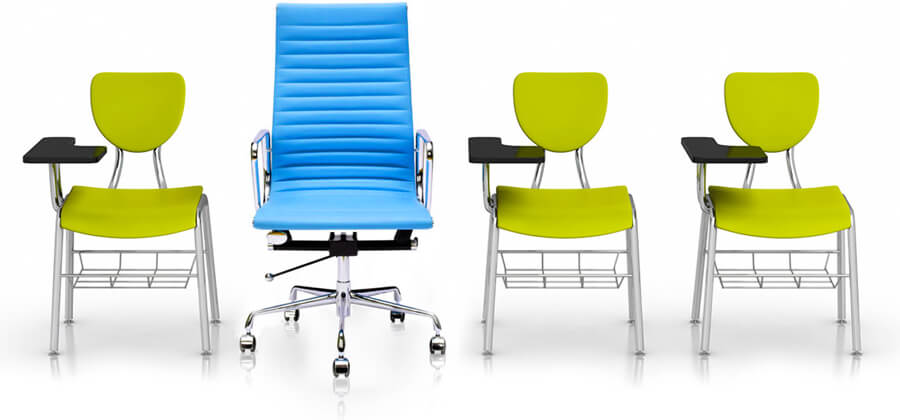

Noodle Partners helps colleges and universities offer the best online and hybrid (online and on-campus) programs. It does this by harnessing technology and support services that are efficient, elegant and economical, and providing them to institutions in a manner that is flexible, transparent and aligned with clients’ goals.
